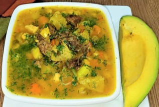
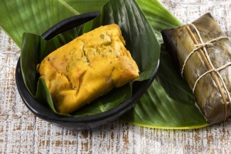
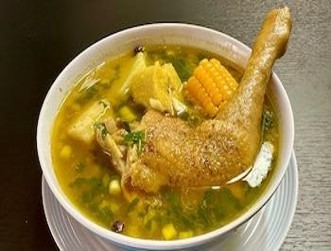
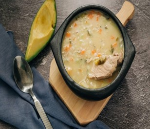
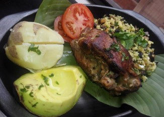
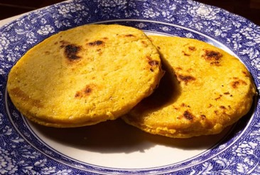
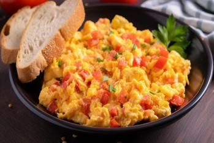
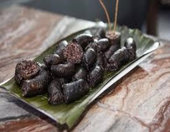
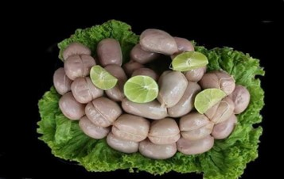

Platillos
Descubre los maravillosos platillos, bebidas y dulces tradicionales que el municipio
de Toledo tiene para ofrecer

Descubre los maravillosos platillos, bebidas y dulces tradicionales que el municipio
de Toledo tiene para ofrecer

El mute santandereano es una sopa espesa y contundente preparada con maíz, carne de res, cerdo, callo, verduras y pastas acompañada de arroz y aguacate.

El tamal santandereano es hecho con masa de maíz, relleno de carnes, garbanzos y envuelto en hoja de plátano.

El sancocho de gallina criolla santandereano es uno de los platos más emblemáticos de Santander, caracterizado por el uso de la gallina de campo (más dura y sabrosa que el pollo común) y una combinación generosa de tubérculos regionales como la arracacha y la yuca. Su preparación tradicional se realiza a fuego de leña para obtener un sabor ahumado único.

La sopa de maíz currungo y las sopas con ruyas son platos emblemáticos de la gastronomía tradicional andina.
Es una sopa espesa cuyo ingrediente principal es el maíz semipartido o "cuchuco", cocinado lentamente hasta obtener una consistencia cremosa, a menudo cuajado con un poco de harina de maíz.

El cabrito es uno de los platos más emblemáticos de la gastronomía de Norte de Santander. En esta región, especialmente en Cúcuta y municipios cercanos como Los Patios, se prepara tradicionalmente asado a la leña o al horno tras un proceso de marinado con hierbas y especias locales.

La arepa de maíz amarillo es una variante tradicional en Colombia y Venezuela, caracterizada por su color intenso y un sabor ligeramente más dulce que el de la blanca. Se puede elaborar tanto con harina precocida como con maíz pilado o triturado, ofreciendo una textura que puede ir desde lo crocante por fuera hasta lo suave y esponjoso por dentro.

El perico (o huevos pericos) es un plato tradicional de Colombia y Venezuela que consiste en huevos revueltos preparados con un sofrito de cebolla y tomate. Es el desayuno por excelencia en estos países, usualmente servido con arepa.

Son un embutido tradicional muy popular, especialmente en la región Andina. Se elaboran utilizando el intestino delgado del cerdo, el cual se rellena con una mezcla cocida que varía según la región, pero que generalmente incluye sangre de cerdo o res, arroz y diversas especias.

Las génovas son un embutido artesanal tradicional de Colombia, especialmente popular en las regiones de Boyacá y Santander. Se caracterizan por su forma de pequeñas esferas o "bolitas" de unos 2 a 3 cm, que suelen venir amarradas entre sí con hilo formando un collar.